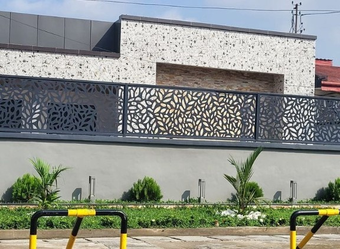
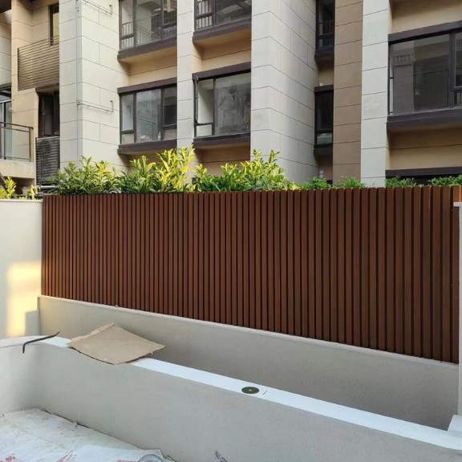
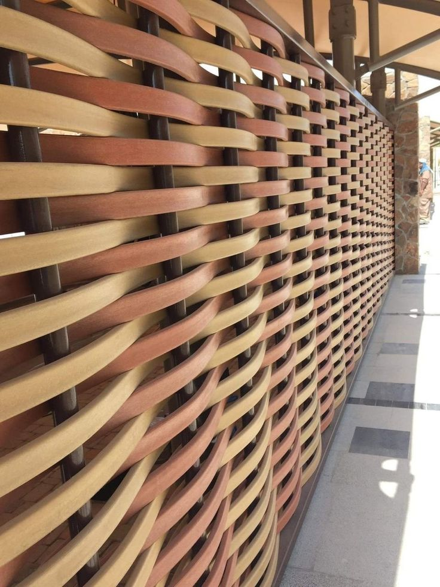
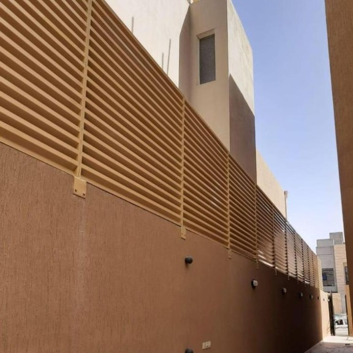
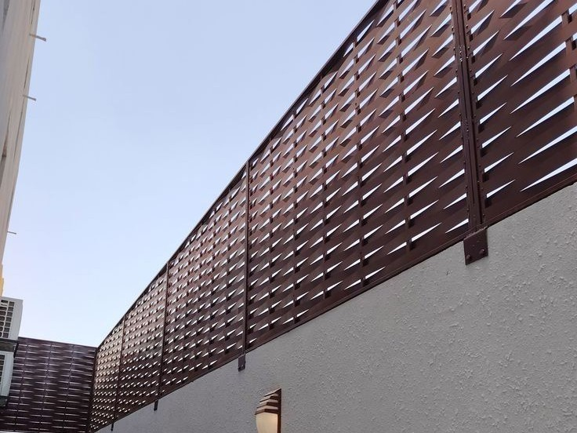
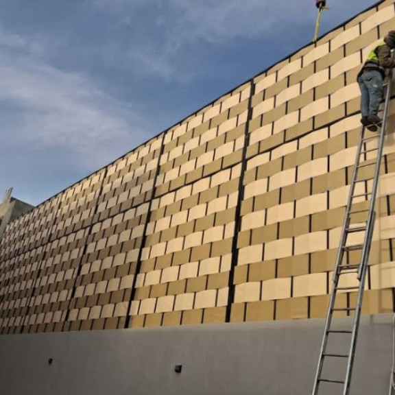

توريد وتركيب أحدث وأجمل السواتر الحديديه والبلاستيكيه للمنازل والشركات في الرياض. حماية خصوصيه بتصاميم عصرية ومواد عالية الجودة.

تنفيذ وتركيب سواتر قص ليزر للاحواش والفلل بالرياض باستخدام أفضل أنواع الحديد مع الدهان ضد الرطوبه والمطر. توفر هذه السواتر حمايه خصوصيه مع منظرا جميل ومثالي للمنازل والفلل، مع جوده واحترافيه كاملة في التركيب، وتضفي لمسة جمالية وعصرية على ديكور المنزل الخارجي.

توريد وتركيب سواتر من بديل الخسب البلاستيكي مظلع او ساده حسب الطلب، تعتبر مظلات سواتر بديل الخشب البلاستيكي خياراً مثالياً يعطيك منظر واقعي وتراثي، مناسب للفنادق والشركات والمنازل والفلل، حيث تعطيك مظهراً طبيعياً، كما انه مقاوم للرطوبه والامطار، وتتوفر بألوان عديده تناسب كافة الاحتياجات.

تركيب سواتر بلاستيك مجدول بمظهر جذاب وأنيق يجمع بين الفخامة والقوه. مناسب لأحواش البيوت والفلل والاستراحات في الرياض، وتتميز بمقاومتها العالية للرطوبه والامطار، مما يضمن عمراً افتراضياً طويلاً وتصميماً لا يضاهى.

تركيب سواتر شرائح حديد مع دهان فرن مقاوم للصدأ مناسب لاحواش المنازل والفلل والقصور والمجمعات التجارية والشركات. بألوان متعددة واتقان في التركيب تقاوم الرياح الشديدة بفعالية عالية.

نقوم بتركيب سواتر حديد مجدول بمواصفات عالية لتحمل أقسى الظروف. يتم تصنيع السواتر من ألواح الحديد المجلفن المجدول بسماكات مختلفة مع طلاء مقاوم للصدأ والرطوبة. توفر خصوصية كاملة وحماية ضد الرياح والأتربة. مناسبة للمدارس، المزارع، والمستودعات. متينة وعمرها الافتراضي طويل مع ضمان ضد التآكل.

نقدم سواتر قماش PVC مجدول عالي الجودة مقاوم لأشعة الشمس والماء والقطع. يتميز بخفة الوزن وسهولة التركيب والفك مع الحفاظ على الخصوصية 100%. متوفر بألوان متعددة ويستخدم بكثرة في الاستراحات والملاعب ومواقف السيارات. لا يتأثر بالعوامل الجوية ويتميز بشكله الجذاب وسعره المناسب.
خصوصية كاملة وحماية من الرياح والأتربة بجميع أنواع السواتر وبضمان 5 سنوات
نحن رواد في تركيب السواتر في الرياض وجميع مناطق المملكة. نوفر لك حلول متكاملة لزيادة الخصوصية وحماية منزلك، مزرعتك، أو منشأتك من أعين الجيران والرياح والأتربة والشمس.
نقوم بتنفيذ جميع أنواع السواتر بأعلى معايير الجودة: السواتر الحديد، السواتر الخشبية، السواتر البلاستيك، سواتر الشينكو، وسواتر القماش. نستخدم هياكل حديد مجلفن مقاوم للصدأ وبألوان وتصاميم تناسب جميع الأذواق. فريقنا متخصص في تركيب سواتر للأسطح، الحدائق، المزارع، والمنشآت الحكومية والخاصة.
نقدم معاينة مجانية للموقع، وسرعة في التنفيذ خلال 3 أيام، وضمان 5 سنوات على الهيكل والتركيب. أسعارنا منافسة وتبدأ من 80 ريال للمتر. جميع أعمالنا تشمل عزل كامل وعمل أساسات قوية تتحمل الرياح.
جميع أنواع السواتر • هيكل حديد مجلفن • خصوصية 100% • عزل شمس ورياح وأتربة • تركيب خلال 3 أيام • ضمان 5 سنوات • أسعار تبدأ من 80 ريال للمتر • معاينة وتصميم مجاني